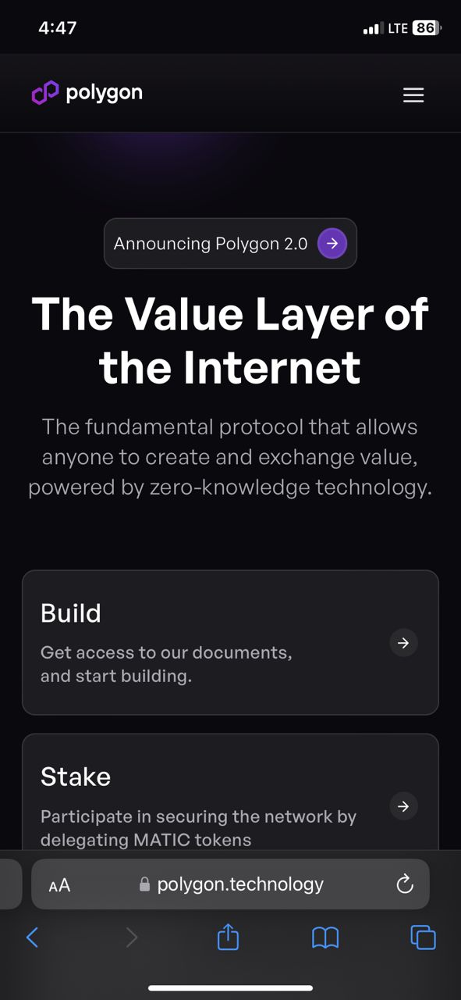

White Space and Clean Design
BYU-Idaho
BYU-Idaho's website, byui.edu, embodies a clean design pattern with a focus on efficient use of white space. The site's design creates a visually appealing and user-friendly experience, allowing visitors to navigate seamlessly through the various sections. The use of white space enhances readability and directs attention to essential information, fostering a sense of clarity and simplicity. The clean design not only contributes to a modern and professional appearance but also reflects BYUI's commitment to providing an accessible and organized online platform for its users.
PARC: Contrast
Polygon Technologies

Polygon Technologies skillfully implements the principle of contrast to enhance user experience. The website seamlessly integrates a simple color scheme, and bold hues against clean backgrounds to ensure optimal readability and visual appeal. The smart use of contrasting elements guides users effortlessly through the interface. This deliberate play of light and dark, vivid and subdued, not only elevates the site's aesthetics but also prioritizes accessibility, making content easily distinguishable.
Visual Hierarchy
Navixy
Navixy's website exemplifies a thoughtfully crafted visual hierarchy, where essential information is strategically arranged for an intuitive user experience. The use of contrasting colors, clear typography, and strategic placement of elements guides visitors seamlessly through the website. A well-structured navigation contributes to an engaging and user-friendly interface. By employing visual hierarchy principles, Navixy ensures that users can quickly grasp the key functionalities and benefits, enhancing the overall effectiveness of their online presence.